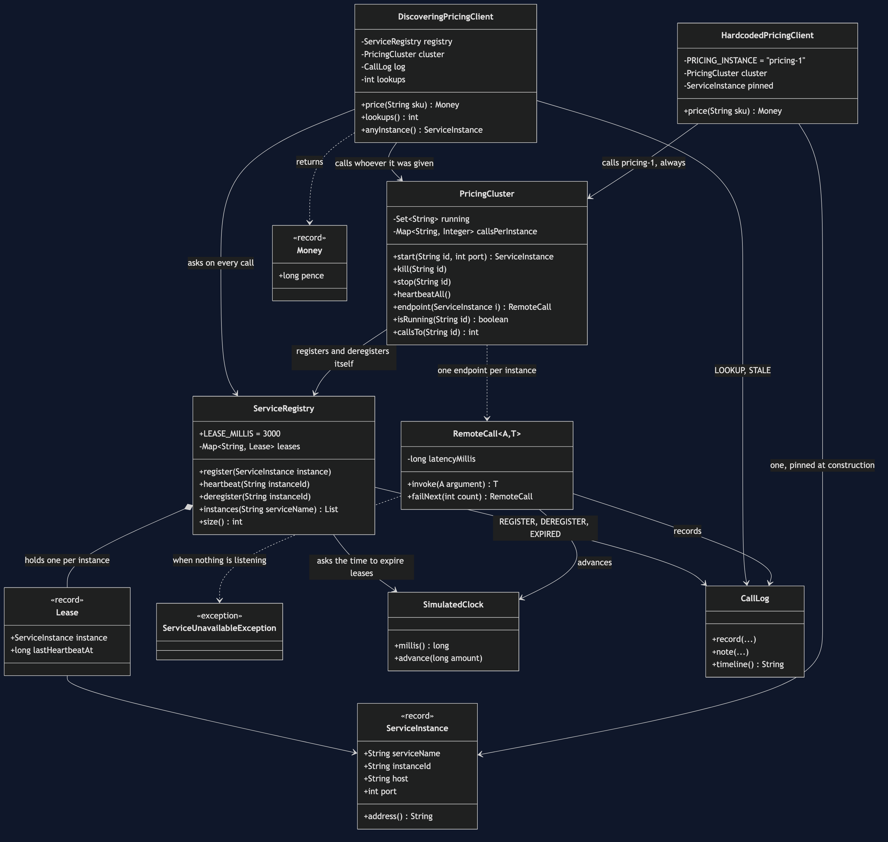
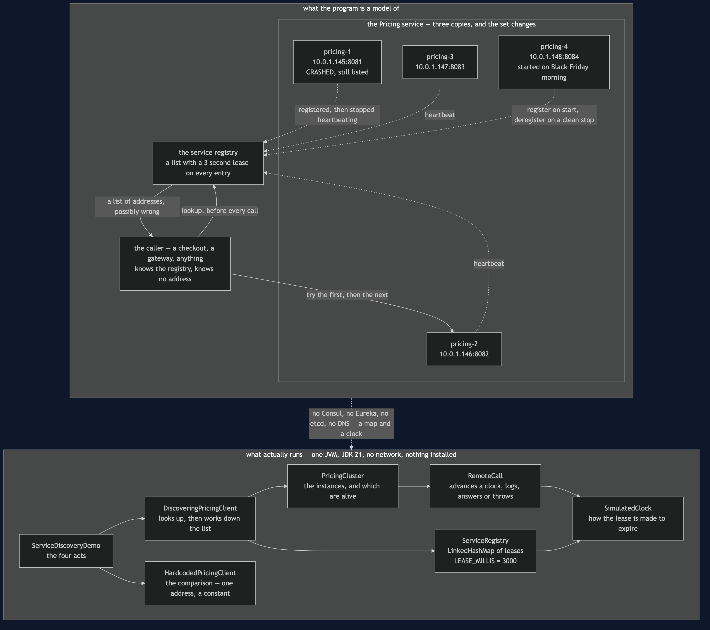
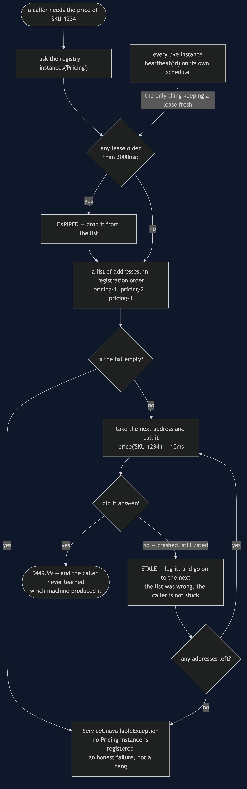
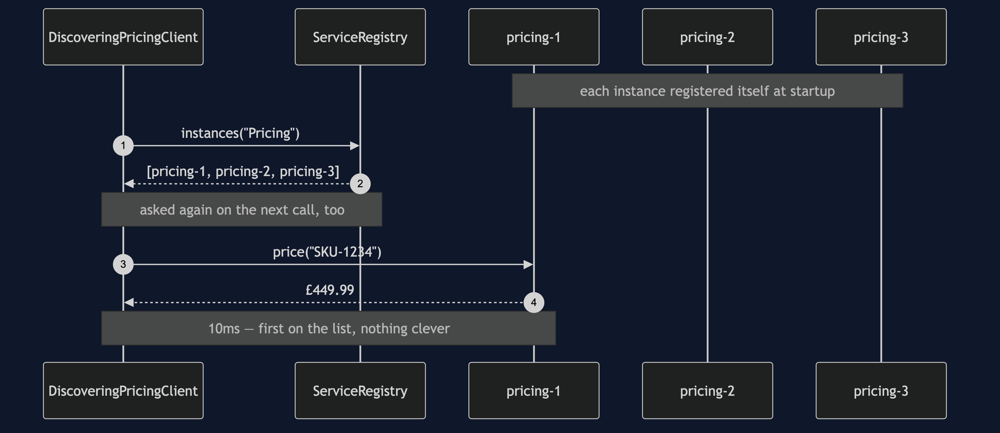
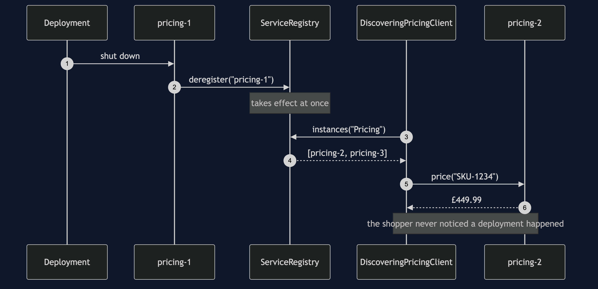
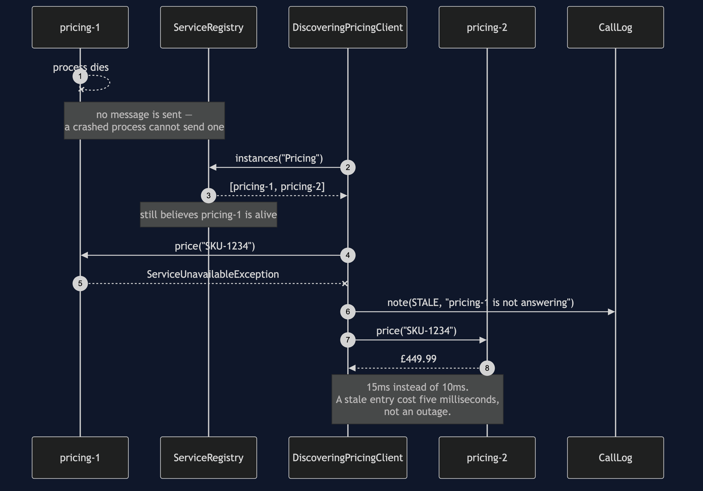
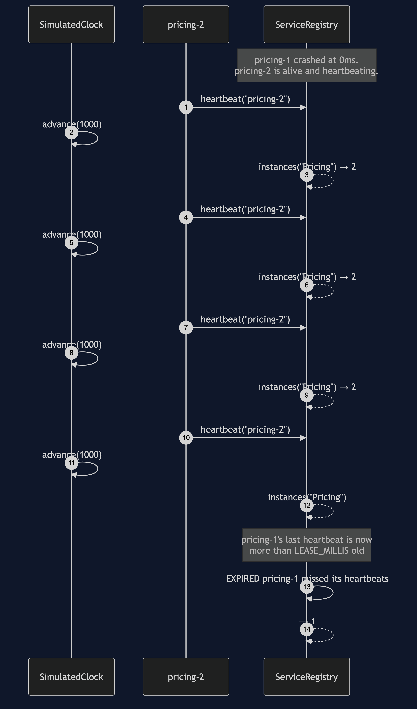
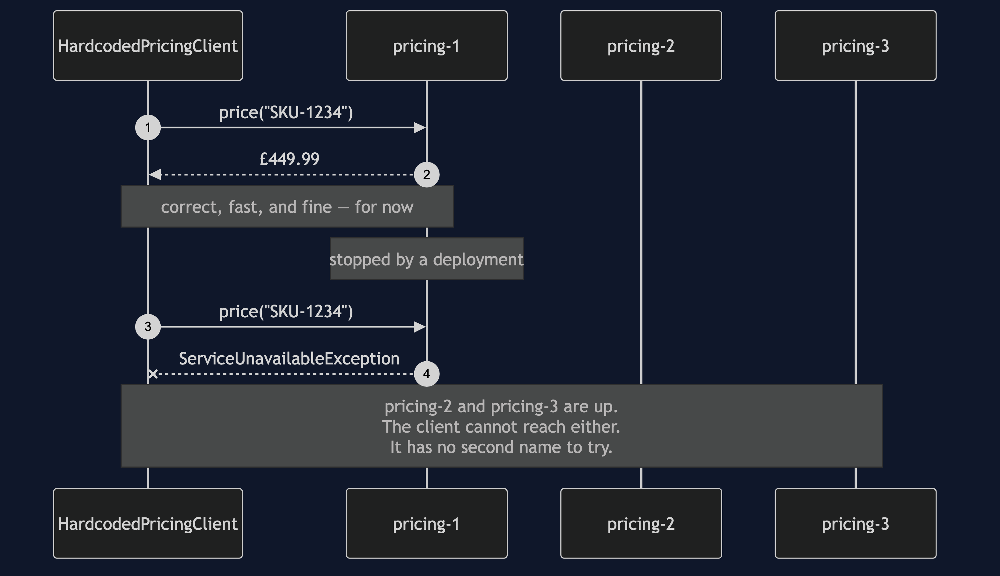

Service Registry and Discovery Pattern
Instead of writing down where a service lives, let each copy of it announce itself to a shared list when it starts, and ask that list for an address every time you need one.
Think of a taxi rank instead of one driver's personal phone number. If you saved a driver's number, you are stuck when they are asleep or have changed jobs. If you ring the rank, you get whoever is on duty right now. And the catch in that analogy is the catch in the pattern: the rank's list is only as good as its last update, so a driver who went home five minutes ago may still be on it.
The shop's Pricing service runs as three instances. One is restarted during every deployment. Another is added on Black Friday morning. One crashes at some point, because processes do. Any caller with PRICING_URL written into it has an outage every time that set changes — while healthy instances sit idle, paid for and unreachable.
Run
./gradlew runAct one is the hardcoded address meeting an ordinary deployment:
==================================================================
1. A hardcoded address, and a routine deployment
==================================================================
before the deploy: £449.99
0ms -> 0ms Registry REGISTER pricing-1 (10.0.1.145:8081)
0ms -> 0ms Registry REGISTER pricing-2 (10.0.1.146:8082)
0ms -> 0ms Registry REGISTER pricing-3 (10.0.1.147:8083)
0ms -> 10ms pricing-1 OK £449.99
10ms -> 10ms Registry DEREGISTER pricing-1 left cleanly
after the deploy: pricing-1 did not answer
two healthy instances are sitting idle. The client cannot use them,
because it was told about one machine and has no way to learn about another.Act two is the same deployment, plus a scale-up, with discovery:
==================================================================
2. The same deployment, with a registry
==================================================================
before the deploy: £449.99
after the deploy: £449.99
after scaling up: £449.99
0ms -> 0ms Client LOOKUP 3 Pricing instance(s) offered
0ms -> 10ms pricing-1 OK £449.99
10ms -> 10ms Registry DEREGISTER pricing-1 left cleanly
10ms -> 10ms Client LOOKUP 2 Pricing instance(s) offered
10ms -> 20ms pricing-2 OK £449.99
20ms -> 20ms Registry REGISTER pricing-4 (10.0.1.148:8084)
20ms -> 20ms Client LOOKUP 3 Pricing instance(s) offered
20ms -> 30ms pricing-2 OK £449.99
no code changed, no restart, no configuration edit.Notice the registry is consulted before every call. Caching the answer is how you accidentally reinvent the hardcoded address.
The part that is easy to skip
A registry can be wrong, and the project spends more time on that than on registration. Act three: an instance crashes, so it never gets the chance to tell anybody.
==================================================================
3. A crash: the registry is wrong for a few seconds
==================================================================
price still answered: £449.99
0ms -> 0ms Pricing CRASHED pricing-1 died without deregistering
0ms -> 0ms Client LOOKUP 2 Pricing instance(s) offered
5ms -> 5ms Client STALE pricing-1 was on the list but is not answering
5ms -> 15ms pricing-2 OK £449.99
the registry still lists 2 instances, one of which is dead.The registry hands out a dead address with complete confidence. A caller that trusts the first address it is given fails here — which is exactly the failure discovery was supposed to prevent. So the client works down the list, and gives up only when it runs out.
Act four is the lease expiring. Every instance renews its registration by heartbeating; a dead one cannot, so after three seconds it drops off:
immediately after the crash: 2 listed
1s later: 2 listed
2s later: 2 listed
3s later: 2 listed
4s later: 1 listed
4000ms -> 4000ms Registry EXPIRED pricing-1 missed its heartbeats
the lease is 3000ms, so the wrong answer lasted a few seconds and then stopped.
that window is the price of the pattern. It is not a bug in it, and there is
no setting that removes it — a shorter lease just trades it for more traffic.That window is the honest cost. A stale entry is in some ways worse than no registry at all, because callers trust it. The pattern does not remove the problem; it bounds it, and it makes the bound a number you choose.
Test
./gradlew test19 tests, in about a second, with no Thread.sleep. The lease expiry is tested by advancing a SimulatedClock by hand — including one test that checks the exact boundary millisecond, so the expiry rule is pinned rather than approximately believed.
A hardcoded address returns the right price too, so no test asserts that a price is correct. They assert who the caller was able to reach: that a new instance is found without a code change, that a polite shutdown takes effect immediately, that a crashed instance stays on the list, that the client works down the list past a stale entry, that ten seconds of heartbeats keep an instance alive through three leases, and that with nothing registered the caller gets an honest failure rather than a hang.
HardcodedPricingClientTest passes too, and records the cost: an ordinary deployment takes the client down while two healthy instances sit idle, and the class cannot even be constructed pointing at a different instance — because the address is a constant, and changing a constant is a code change, a build and a deployment.
One JVM, no infrastructure
No Consul, no Eureka, no etcd, no DNS, no Docker, no HTTP. ServiceRegistry is a map with leases, an instance is an entry in a set, and a network call is RemoteCall against a simulated clock.
That gives you the pattern's shape honestly — registration, heartbeat, lease expiry, stale reads, and a client that must be prepared for the list to be wrong. It is the same shape whether the registry underneath is a HashMap or a five-node Consul cluster. What it does not give you is the operational reality: no network partitions splitting the registry from the instances, no consensus, no registry that is itself down. Finish this and you will understand what a service registry does. You will not have run one.
Technologies and versions
Nothing here is a range and nothing is latest: a course that worked last year and does not work today is worse than one that never took the dependency.
| What | Version | Why it is here |
|---|---|---|
| Java | 21 | The repository standard, requested through the Gradle toolchain block |
| Gradle | 9.2.1 | The wrapper in this directory; no separate install needed |
| JUnit 5 | 5.10.2 | The 19 tests, through junit-bom so the Jupiter artefacts cannot disagree |
That is the entire list, and the short version of it is the point. This project has no runtime dependency at all — the dependencies block in build.gradle names nothing but JUnit, and JUnit is testImplementation. There is no Consul client, no Eureka, no HTTP library and no container. Every one of the twelve projects in this category is built the same way, so a reader who can run one can run all of them, offline, with a JDK and nothing else.
Learning Material
| Document | What it covers |
|---|---|
docs/problem-statement.md | Why PRICING_URL is an outage waiting for a deployment |
docs/service-discovery-pattern-explained.md | The pattern from a taxi rank, the lease, stale reads, and registry vs Simple Factory |
docs/class-diagram.md | The types, and why the client depends on the registry rather than an address |
docs/architecture-diagram.md | What would be running, which of it can vanish without warning, and the dead instance still on the list |
docs/data-flow-diagram.md | One price lookup end to end: the expiry check, the loop down the list, and the two ways out |
docs/sequence-diagram.md | The crash in call order, with the clock — five milliseconds is the whole cost of a wrong list |
docs/uml-diagram.md | Registration, lookup, the stale read, and lease expiry |
docs/animation.html | The registry, the leases and the clock, one step at a time, in a browser |
docs/prerequisites.md | What you need to know, what you explicitly do not, and how to get a JDK |
docs/session.md | A one-hour taught session with exercises |
docs/spec.md | The generated specification, with measured test counts and timings |
docs/youtube.md | Title, description and chapters for the video |
video/README.md | The video pipeline, the scene list, and how to rebuild it |
The pattern in one picture
The class diagram, and the thing to look for is what the client holds. It holds a registry. It does not hold an address, and it has no field it could put one in.

What runs where
The lower half is the literal truth: one JVM, a map with timestamps, no network. The upper half is what it models — a registry, three or four copies of Pricing, and one of them dead and still on the list.

How the data moves
One price lookup from beginning to end. A product code goes out and a price comes back; the interesting traffic is the address in the middle, which is a claim rather than a fact.

Who calls whom, in order
The crash, in call order, with the clock down the side. The registry offers a dead address at 0ms, the client discovers that at 5ms, and the shopper has a price at 15ms.

All five sequences
The full set from docs/uml-diagram.md, in the order that document argues them.
One. The happy path. Ask, then call. Two steps where the hardcoded client had one, and the extra step is the entire pattern.

Two. A polite deployment. pricing-1 deregisters on its way out, so the list is true before the first call that would have hit it. Nobody notices a deployment happened.

Three. A crash. The same event with one message missing, because a dying process does not get a turn. The registry is confidently wrong and the client works past it.

Four. The lease expiring. No client in this one at all. Time passes, heartbeats do not arrive, and at 4000ms the registry stops lying.

Five. No registry at all. One constant address, no second name to try, and two healthy instances the caller cannot reach.

Video
The narrated walkthrough is built from video/scenes.py by video/build_video.sh. It runs about seventeen and a half minutes across sixteen scenes, and the rendered file is not committed — see the repository README for why — so producing it takes about ten minutes on macOS.
Where this sits
Second of twelve in micro-services-design-patterns. It follows API Gateway, which assumed it could reach the services it needed; this project is how that assumption is met.
It also invites a comparison with two creational patterns. Simple Factory and Singleton both answer "give me an instance", and so does a registry. The difference is that a factory's answer is decided by code and cannot be wrong, while a registry's answer changes minute to minute without a code change and can be out of date. That last clause is why a registry needs a lease, a heartbeat and a caller prepared to try the next name on the list, and a factory needs none of those things.
Next in the learning order, Load Balancing takes the list this project produces and asks a question this one dodged: given three live instances, which one should you actually call?
Also available with a framework
Service Discovery with Spring Cloud Consul Pattern reruns this idea on a real registry, and shows what a real one adds and where its list can be wrong. Watch this project first.